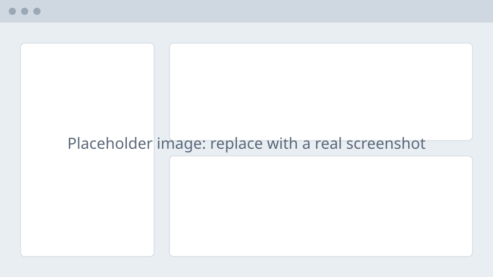

One or two sentences: what the project does, for whom, and what this deck will walk through.
→ next chapter↓ detailsEsc overviewV reading view? all keys
One sentence on how to read the deck, or what the closing slide contains.
One paragraph in plain language: what a user gives the project and what they get back.
thing_one what it isthing_two what it isthing_three what it isThe work happens in two parts:
What this part is responsible for, in one or two sentences.
path/to/part_one.pyWhat this part is responsible for, in one or two sentences.
path/to/part_two.py↓ the options compared

Each level zooms into one box of the level before it, and each suits a different reader.
→ steps: one level at a time
Context: the system as one box, with its users and the outside systems it depends on.
Containers: the separately running parts, such as apps, services and data stores.
Components: the main building blocks inside one container.
↓ how to read the diagrams
reads or callsdashed = a reply, or optional↓ zoom into the system
↓ zoom into the api
A sentence that says what to notice in the snippet, and what the default is.
path/to/schema.pyThe one-sentence takeaway from this code: the thing a reader would otherwise miss.
path/to/registry.py resolve_handlerA sentence that says what to notice, such as which lines are the fast path and which the normal one.
↓ step by step, then the modes
→ steps: the helper · its proposal · accept or reject
→ switch mode: mode-a · mode-b · mode-c
| Stage (in execution order) | mode-a | mode-b | mode-c | Condition / note |
|---|---|---|---|---|
prepare | ● | ● | ● | always |
fast_path | ● | — | — | skips the slow steps |
enrich | — | basic | full | ENRICH_LEVEL |
review | — | opt-in | ● | REVIEW_ENABLED=true |
validate · emit | ● | ● | ● | always |
→ steps through each message
Lifecycle: which event moves a job from one state to the next.
Data model: the records and how they refer to each other.
project-name/
├─ README.md ← start here
├─ docs/ ← longer explanations
├─ deploy/deployment.yml ← the running parts (L2)
└─ package/
├─ routes.py ← entry points
├─ pipeline/ ← one file per stage
├─ storage/ ← database access
└─ worker.py ← background jobsWhere to look first
README.md, section "Getting started"package/pipeline/package/routes.py↓ commands
One sentence on what to compare or look for in the output.
Chapters run left to right and their details run downward. Some diagrams build up step by step as you press →.